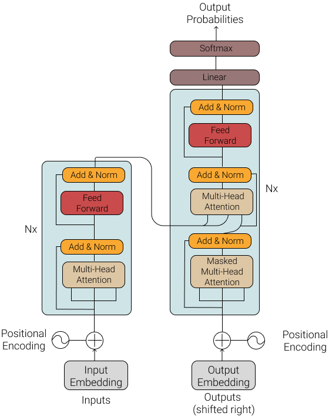

Week 04
Intro to Transformers
LLMs in Lingustic Research WiSe 2024/25
30 Oct 2024
Converting words to vectors
Machines cannot understand words directly, they can only understand numbers.
Words to vectors is a process of converting words into numerical vectors.
Can you think of ways to convert words to vectors?
How would you represent the sentence “I am a student” as a vector?
One-hot encoding
- One-hot encoding is the simplest way to convert words to vectors.
- Each word is represented as a vector of zeros with a 1 at the index corresponding to the word.
- For example, the sentence “I am a student” can be represented as a matrix of one-hot encoded vectors.
- “I” is represented as [1, 0, 0, 0], “am” is represented as [0, 1, 0, 0], and so on.
Limitations of one-hot encoding
- One-hot encoding has several limitations:
- It does not capture the relationships between words.
- It does not consider the context in which the words appear.
- It does not account for the similarity between words.
Word embeddings
- Word embeddings are dense vector representations of words that capture the relationships between words.
- Word embeddings are learned from large text corpora using neural networks.
- For example, the word “king” might be represented as [0.2, 0.3, 0.5], and the word “queen” might be represented as [0.1, 0.4, 0.6]. These vectors capture the relationship between the two words.
- These vectors are learned in such a way that similar words have similar embeddings.
Transformers
- A transformer is a type of deep learning model that has been widely used in natural language processing tasks.
- The transformer architecture was introduced in the paper Attention is All You Need by Vaswani et al. (2017).
- Unlike older models, Transformers can process entire sentences simultaneously rather than word by word. This makes them faster and more accurate.
- They form the foundation of many powerful language models such as GPT-3, BERT, and T5.
- They have been used in a wide range of applications such as machine translation, text summarization, and question answering.
Transformer architecture
Image from “Attention is all you need”
- In a transformer-based encoder-decoder architecture, the transformer consists of a encoder block and a decoder block
- The encoder block consists of a stack of N=6 identical layers
- The decoder block consists of a stack of N=6 identical layers
- Input sequence is passed through the encoder block to generate a sequence of hidden states which are then passed through the decoder block to generate the output sequence
- For example, input sequence is a sentence in English and output sequence is a sentence in German. “I am a student” -> “Ich bin ein Student”
Embedding
- Each word in the input and output sequences is represented as a 512-dimensional vector called an embedding.
- The embedding layer maps each word to its corresponding embedding vector.
- Before training begins, each word is assigned a random embedding vector.
- These are small random values obtained from a normal distribution.
- The model tries to capture the patterns and dependencies between words by continuously updating this embedding during training.
Positional Encoding
- Positional encoding is added to the input embeddings to give the model information about the position of each word in the sequence.
- Unlike humans who naturally read from left to right, the transformer needs a special way to understand that “word 1 comes before word 2.”
- The positional encoding in the original transformer is implemented using sine function of different frequencies.
- Using sine waves makes it easier for the transformer to understand both nearby and far-apart relationships between words. (It’s similar to how music uses different frequencies to create unique sounds.)
- The positional encoding vectors have the same dimensions as the embedding vectors and are added element-wise to create the input representation for each word.
- This allows the model to differentiate between words based on their position in the sequence.
- Before diving into multi-head attention, it is important to understand self-attention mechanism, which forms the foundation of multi-head attention.
- In the transformer currently implemented, the self-attention mechanism is applied for each word in the sequence.
Self-Attention
- Self-attention is a mechanism that helps the model weigh the importance of different words in the input sequence when generating each output word.
- It is a mechanism that allows the model to focus on different parts of the input sequence when generating each output word.
- The self-attention mechanism is applied to each word in the input sequence.
The self-attention mechanism has the following steps:
- Linear Transformation:
- A linear transformation is applied to the input representation (obtained from the Embedding and Positional encoding) to get query vector (Q), key vector (K) and value vector (V) for each word.
- Query vectors are responsible for expressing what the model is currently looking for in the input sequence.
- Key vectors have representations which provide information of inter-word dependencies and connections between words.
- Value vectors contain additional information of each word in the input sequence.
Given an input sequence, \[ \begin{align*} \text{X} & = [x_1, x_2, x_3, \ldots, x_n] \\ \end{align*} \]
The linear transformations are expressed as:
\[ \begin{align*} \text{Q} & = \text{X} \cdot \text{W}^Q \\ \text{K} & = \text{X} \cdot \text{W}^K \\ \text{V} & = \text{X} \cdot \text{W}^V \\ \end{align*} \]
where, \(\text{W}^Q\), \(\text{W}^K\) and \(\text{W}^V\) are the weight matrices for the query, key and value vectors respectively. Q, K and V are the query, key and value matrices respectively.
- The same linear transformation is applied to all words in the input sequence.
- Through the linear tranformation, the input word embeddings are mapped to three different contexts: Query, Key and Value.
- Scaled Dot-Product Attention: After the linear transformation, the model computes attention scores by calculating the dot products of each element in the query vector and the key vector, scaling them and applying a softmax function to get the attention weights.
- Dot-product
Given the set of query vectors,
\[ \begin{align*} \text{Q} & = [q_1, q_2, q_3, \ldots, q_n] \\ \end{align*} \]
Given the set of key vectors,
\[ \begin{align*} \text{K} & = [k_1, k_2, k_3, \ldots, k_n] \\ \end{align*} \]
The attention score matrix \(\text{A}\) is a matrix where each entry \(A_{ij}\) is the dot product of the i-th query and and j-th key.
\[ \begin{align*} A_{ij} & = q_i \cdot k_j \\ \end{align*} \]
- Scaling
- The dot-products from above, can potentially become very large.
- Large values affect the training by causing issues in softmax (as these large values might exceed the representable range of numerical precision of the computer, which leads to incorrect outputs).
- So, the dot-products are scaled by the square root of the dimension of the key vectors (\(d_{k}\)).
\[ \begin{align*} A_{ij} & = \frac{q_i \cdot k_j}{\sqrt{d_{k}}} \\ \end{align*} \]
- Softmax
- The scaled dot-products are passed through a softmax function to get the attention weights.
\[ \begin{align*} \alpha_{ij} & = \frac{\exp(A_{ij})}{\sum_{j=1}^{n} \exp(A_{ij})} \end{align*} \]
explained as: where,
- \(\alpha_{ij}\) is the attention weight for the i-th query and j-th key.
- \(\exp\) is the exponential function (e=2.71828).
- The softmax function is applied to each row of the attention score matrix \(\text{A}\).
- Weighted Sum
- The weighted sum is the sum of the element-wise product of the attention weights and the corresponding value vector.
- The weighted sum is the output of the self-attention mechanism.
\[ \begin{align*} \text{O} = \sum_{j=1}^{n} \alpha_{ij} \cdot v_j \end{align*} \]
where,
- \(\text{O}\) is the output of the self-attention mechanism.
- \(\alpha_{ij}\) is the attention weight for the i-th query and j-th key.
- \(v_j\) is the value vector for the j-th key.
Multi-headed attention
- The self-attention mechanism is applied multiple times in parallel to the input sequence.
- “Head” refers to an individual component in the multi-head self-attention mechanism that independently learns different self-attention patterns.
- This allows the model to focus on multiple parts of the input sequence in parallel and thereby allowing the model to capture the entire context.
- This also makes the model more computationally efficient as it enables parallel processing across different heads.
The outputs from all the attention heads are mapped to a linear layer:
\[ \begin{align*} \text{O} & = \text{Concat}(\text{head}_1, \text{head}_2, \ldots, \text{head}_h) \cdot \text{W}^O \\ \end{align*} \]
where, \(\text{W}^O\) is the weight matrix for the output of the multi-head attention mechanism.
- The outputs are then passed to a feed-forward neural network.

LLMs in Lingustic Research WiSe 2024/25